Estrategias lúdicas, artísticas y psicomotoras para potenciar la motricidad fina y gruesa
en niños de prejardín del Hogar Infantil Pequeñines de Popayán
En el Hogar Infantil Pequeñines de Popayán se detectaron en 27 niños de 3–4 años retrasos en el desarrollo psicomotor: persistencia del agarre palmar, dificultad para rasgar, ensartar, saltar y mantener equilibrio. La causa: 2–3 horas diarias de pantallas y reducción del juego libre en favor de talleres escritos.
Se diseñó e implementó "Moti y Moti en Aventura" — un programa de 8 semanas, 4 unidades didácticas, con dos personajes mediadores: Moti Grande (motricidad gruesa) y Moti Pequeño (motricidad fina), utilizando materiales reciclados del contexto caucano.
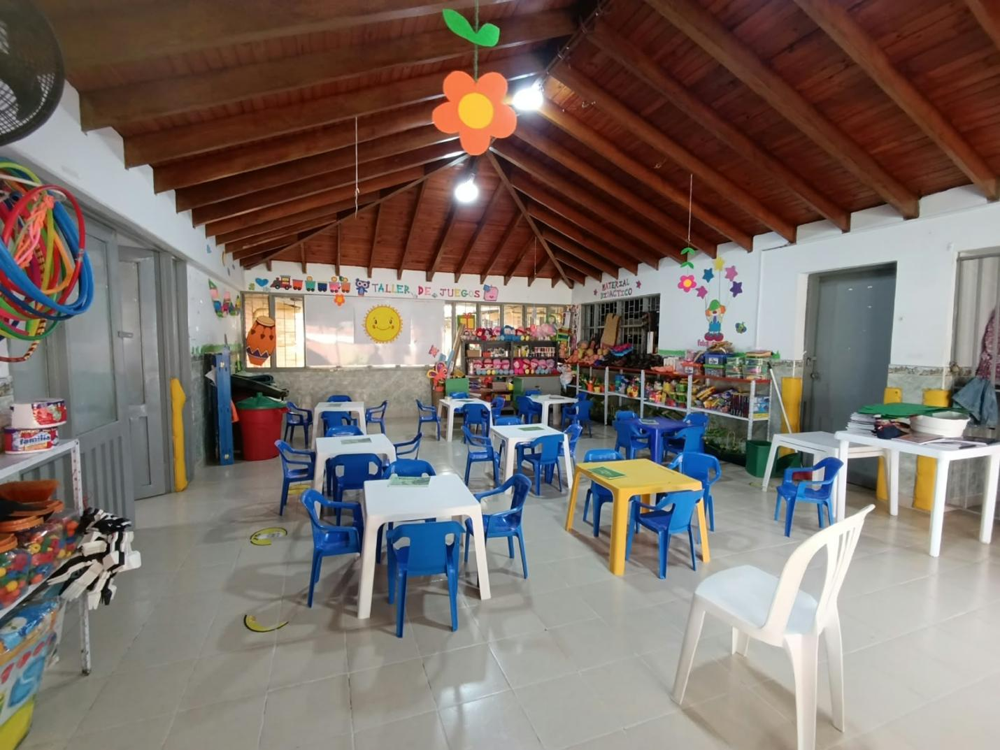
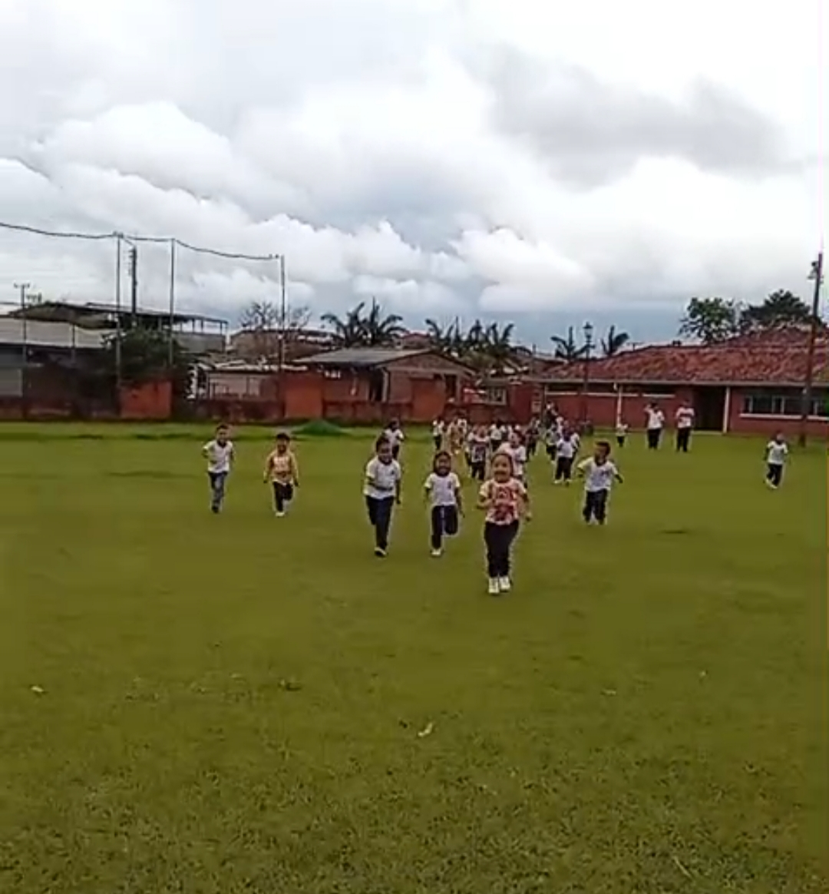
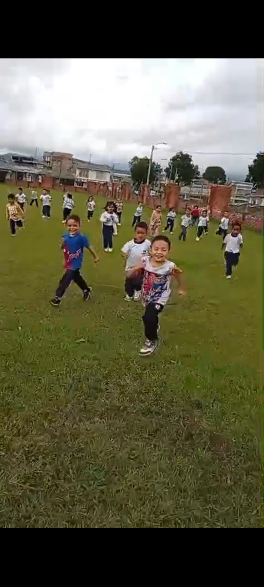
Potenciar el desarrollo integral de la motricidad fina y gruesa en niños y niñas de prejardín 3 del Hogar Infantil Pequeñines de Popayán, a través de estrategias lúdicas, artísticas y psicomotoras mediadas por el juego libre y dirigido, que favorezcan la autonomía, seguridad corporal, coordinación y el goce por el movimiento.
Diagnosticar el nivel de desarrollo de la motricidad fina y gruesa mediante listas de verificación de 20 indicadores, observación participante y diarios de campo.
Diseñar la propuesta "Moti y Moti en Aventura" en 4 unidades progresivas con circuitos, juego libre, arte sensorial, música y material reciclable.
Implementar durante 8 semanas (3 sesiones de 45 min), documentando con diarios de campo, fotos y adaptaciones según los ritmos individuales.
Evaluar avances y producir la cartilla "Moti Moti – manual para jugar en casa y en el jardín" como producto pedagógico replicable.
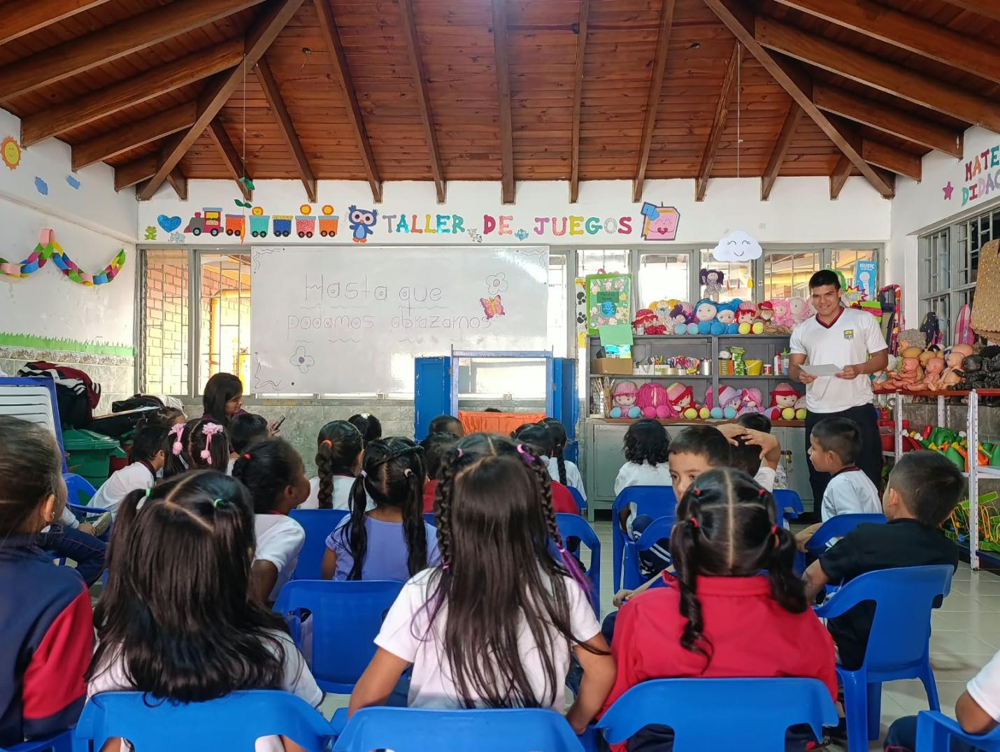
Enfoque cualitativo · Investigación–acción pedagógica · 27 niños de 3–4 años · Hogar Infantil Pequeñines, Popayán
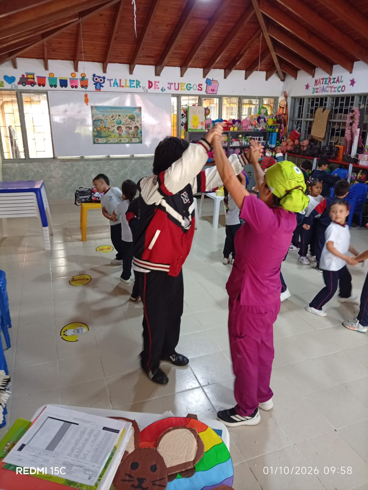
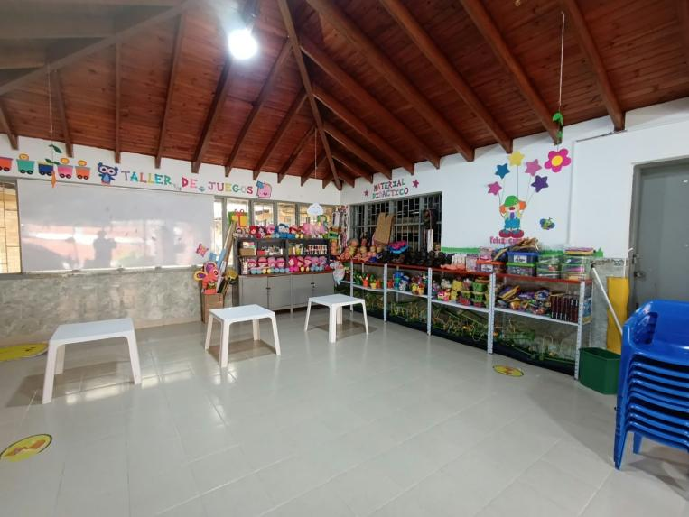
Bonachón, le encanta saltar, trepar y rodar. Es el guía de la motricidad gruesa: trabaja fuerza, equilibrio, coordinación bilateral y esquema corporal.
Curioso, le gusta hacer collares, amasar y recortar. Es el guía de la motricidad fina: trabaja la pinza, precisión y coordinación ojo-mano.
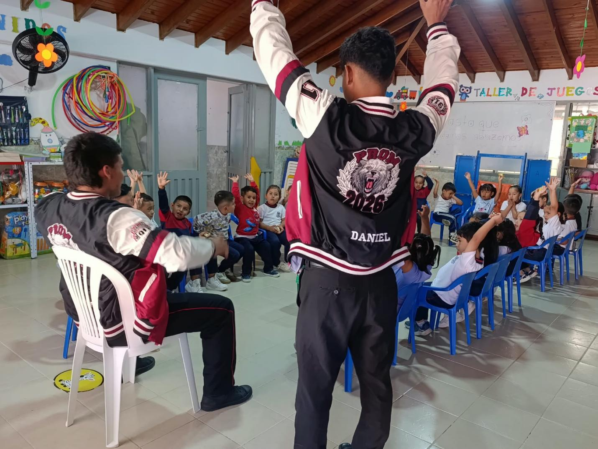
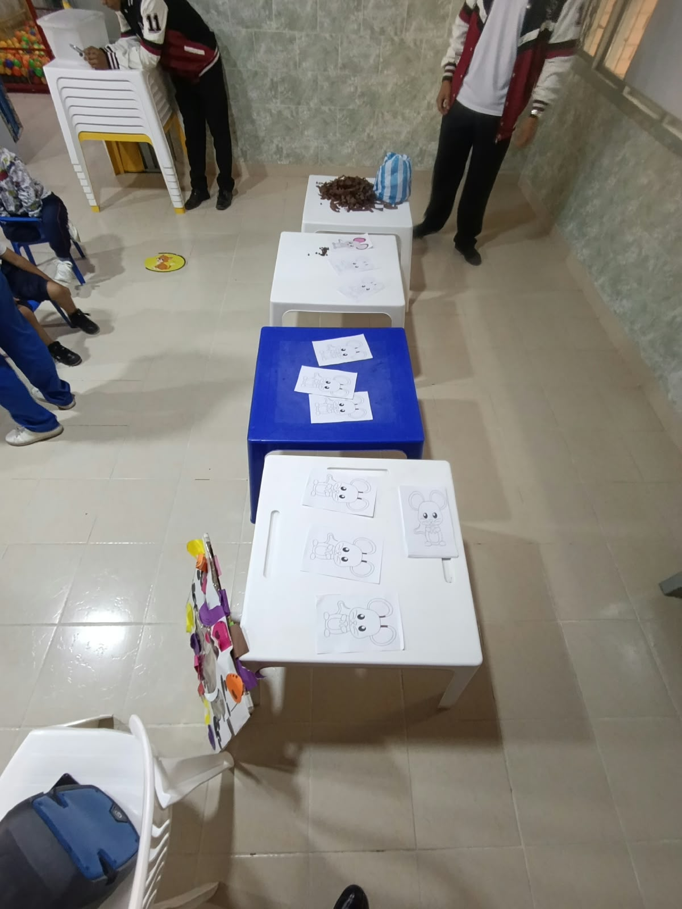
Sem 1–2
Esquema corporal, equilibrio dinámico, precisión bimanual.
M. Fina: Ratoncito sin color: rellenar con dedos y pegar papelillo en su silueta.
M. Gruesa: Rondas infantiles y juego libre.
Sem 3–4
Musculatura de la mano, agarre trípode, coord. ojo-mano.
M. Fina: Pintura para colorear un cocodrilo.
M. Gruesa: Bailes con música infantil (El cocodrilo Dante, Debajo de un botón).
Sem 5–6
Coordinación bilateral, lateralidad, equilibrio.
M. Gruesa: Simón dice con todo el cuerpo.
M. Fina: Capibara de chía: aserrín, media velada, semillas de chía.
Sem 7–8
Integración motriz, autonomía, creatividad.
Integradas: Obra de teatro "Viaje de Moti Moti" (saltar, trepar, ensartar). Olimpiadas Moti Moti con familias + medalla "Yo puedo". (solo se realizó la obra de teatro)
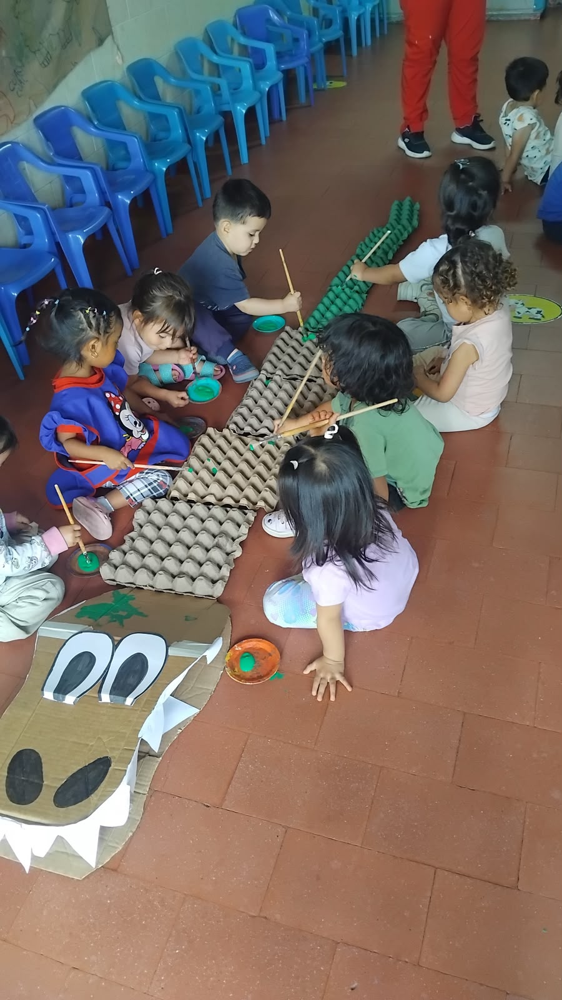
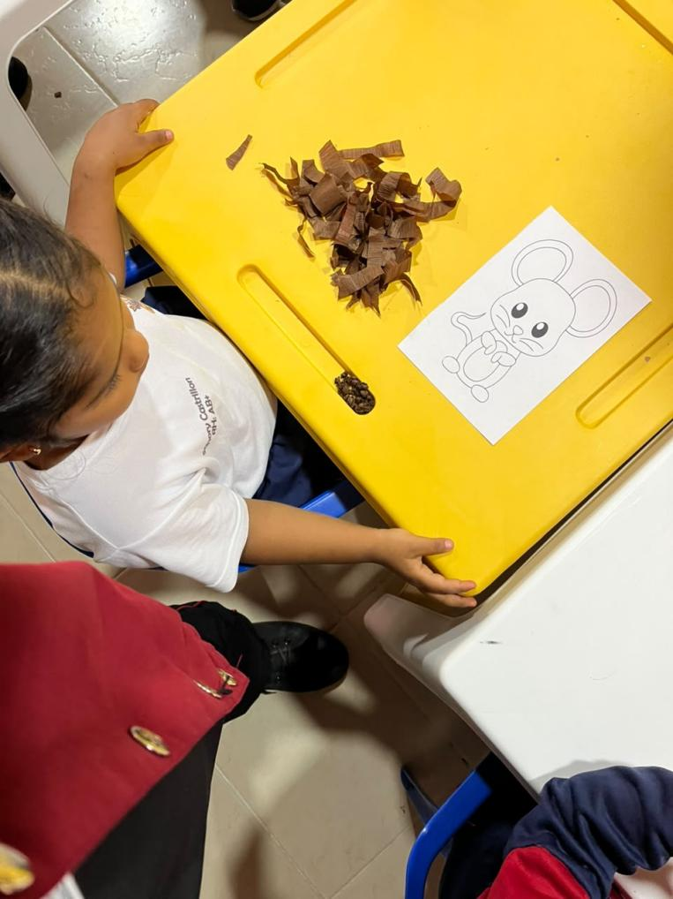
Avances documentados al finalizar las 8 semanas de la propuesta "Moti y Moti en Aventura"
Equilibrio en un pie: de 4 seg → 7 seg. El aspecto socioafectivo también mejoró: mayor seguridad, tolerancia a la frustración, cooperación y autonomía (abrir lonchera, sacarse la chaqueta, comer con cuchara, limpiarse después del baño).
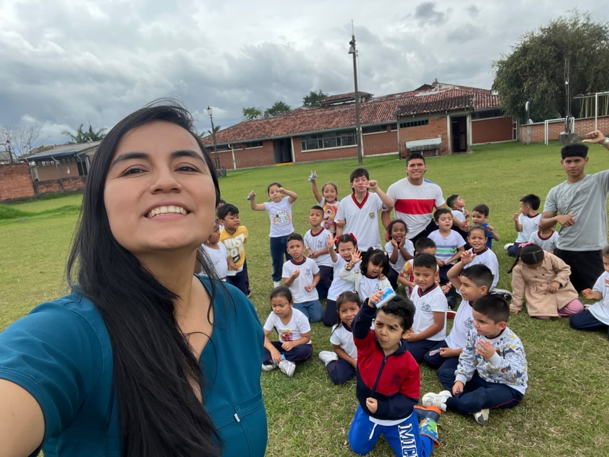
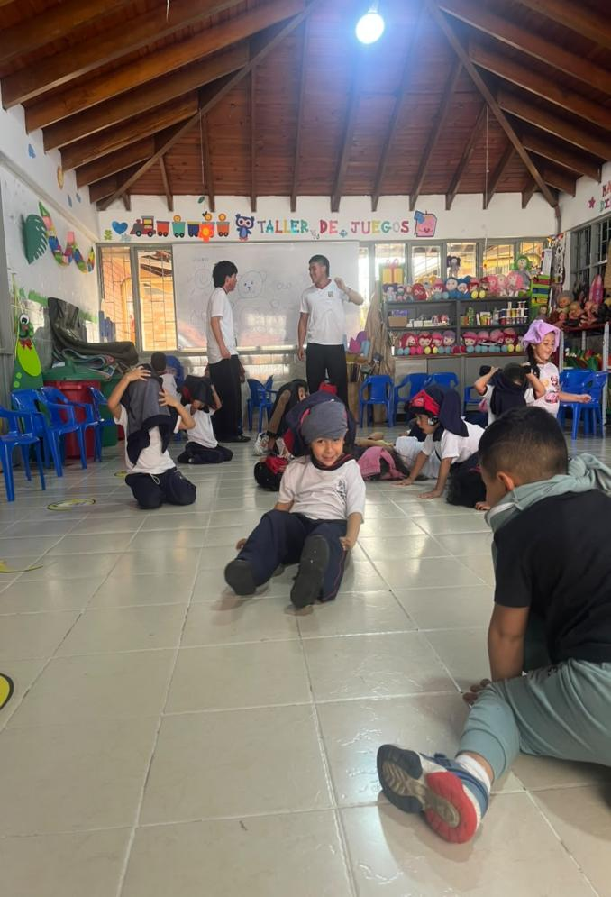
"Si analizamos el panorama de Popayán, el jardín es uno de los espacios más importantes para que el niño corra, ruede, grite, juegue y aprenda. Lograr un espacio así crea en el niño la idea: yo puedo, yo soy capaz — base de la autoestima, la tolerancia a la frustración y la cooperación."
— Propuesta Moti y Moti en Aventura · ENSP Popayán · 2025
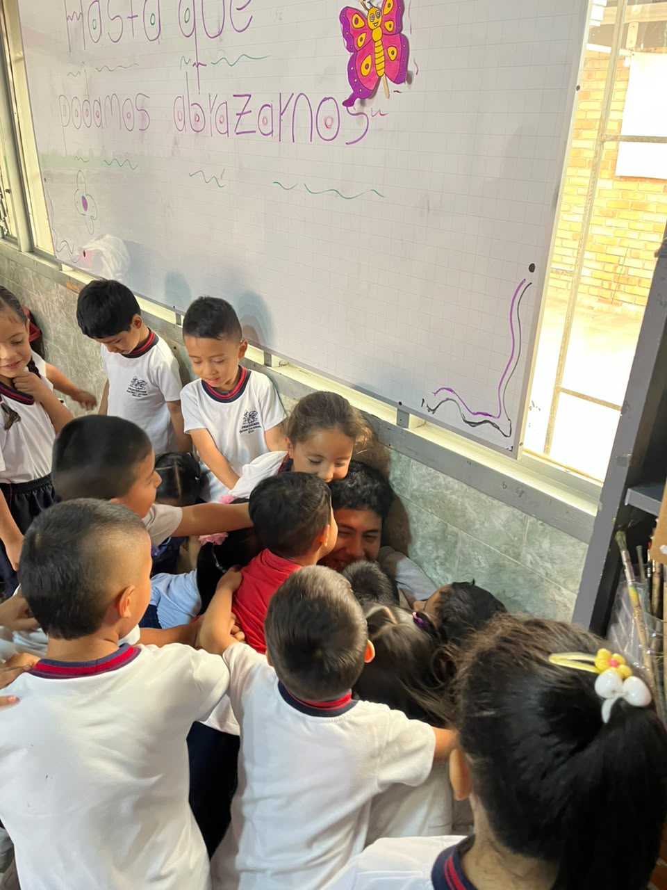
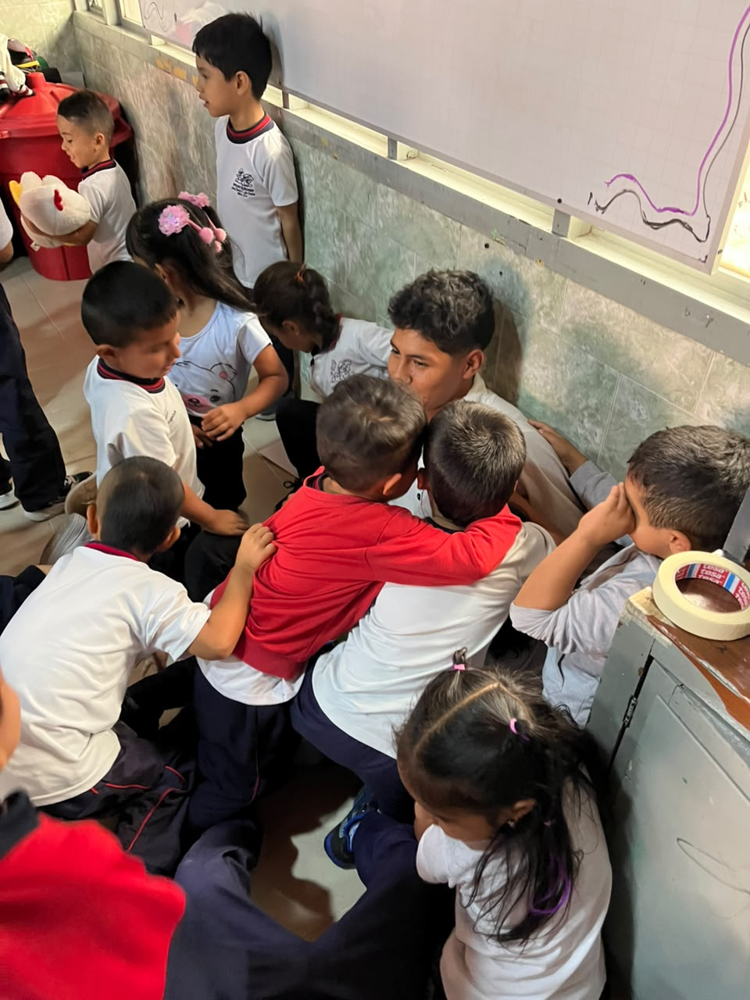